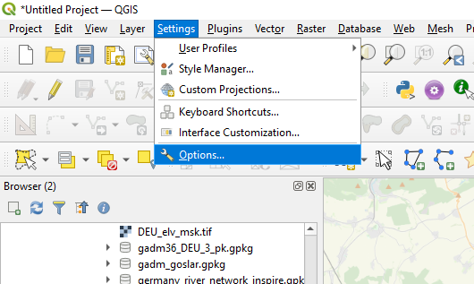

2 Erste Schritte
2.1 Was sehe ich hier?
Mein QGIS ist auf Englisch eingestellt. Falls dich der Sprachunterschied stört, kannst du die Sprache deines QGIS ändern unter Settings \(\rightarrow\) Options (Abb. 2.1).

Figure 2.1: Allgmeine Optionen öffnen um die Sprache zu ändern
Dort links den obersten Eintrag General wählen und die Sprache ändern. Allerdings nur im oberen Feld (user interface translation). Das Feld darunter sollte auf Germany eingestellt bleiben.